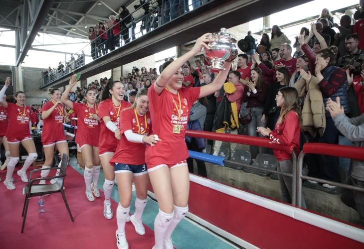

L'AVARCA MENORCA CAMPIÓ COPA DE LA REINA

Històric. El Avarca de Menorca va aconseguir aquest diumenge al migdia en un Pavelló Municipal de Ciutadella a rebentar la seva primera Copa d'SM la Reina dels seus 19 anys en la Superliga femenina.